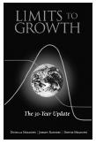
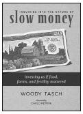

the politics and practice of sustainable living
可持续生活的政治和实践
CHELSEA GREEN PUBLISHING
切尔西 · 格林出版社
Chelsea Green Publishing sees books as tools for effecting cultural change and seeks to empower citizens to participate in reclaiming our global commons and become its impassioned stewards. If you enjoyed Thinking in Systems, please consider these other great books addressing the complexities of the global society and planet that we all share.
切尔西绿色出版公司将书籍视为实现文化变革的工具，并寻求赋予公民权力，让他们参与收回我们的全球公共资源，成为其充满激情的管理者。如果你喜欢在系统中思考，请考虑这些其他伟大的书籍，解决全球社会和地球的复杂性，我们都分享。

Limits to Growth
The 30-Year Update
DONELLA MEADOWS, DENNIS MEADOWS,
and JORGEN RANDERS
ISBN 978-1-931498-58-6
Paper · $22.50
增长的限制
30年更新 DONELLA MEADOWS DENNIS MEADOWS and JORGEN RANDERS ISBN 978-1-931498-58-6 Paper · $22.50
Climate Solutions
A Citizen's Guide
PETER BARNES
Foreword by BILL MCKIBBEN
ISBN 978-1-60358-005-2
Paper · $9.95
气候解决方案公民导游 peter BARNES 前言 BILL MCKIBBENISBN 978-1-60358-005-2 Paper · $9.95
Exposed
The Toxic Chemistry of Everyday Products
and What's at Stake for American Power
MARK SCHAPIRO
ISBN 978-1-60358-058-8
Paper · $16.95
暴露在外
日常用品的有毒化学成分
马克 · 夏皮罗(MARK SCHAPIRO) ISBN 978-1-60358-058-8 Paper · 16.95美元

Inquiries into the Nature of Slow Money
Investing as if Food, Farms,
and Fertility Mattered
WOODY TASCH
Foreword by CARLO PETRINI
ISBN 978-1-60358-006-9
Paper · $21.95
慢钱的本质探究
投资就像投资食品，农场,
作者: CARLO PETRINI ISBN 978-1-60358-006-9 Paper · $21.95
For more information or to request a catalog,
visit www.chelseagreen.com or
call toll-free (800) 639-4099.
欲了解更多信息或要求目录，请访问 www.chelseagreen. com 或拨打免费电话(800 -)639-4099。